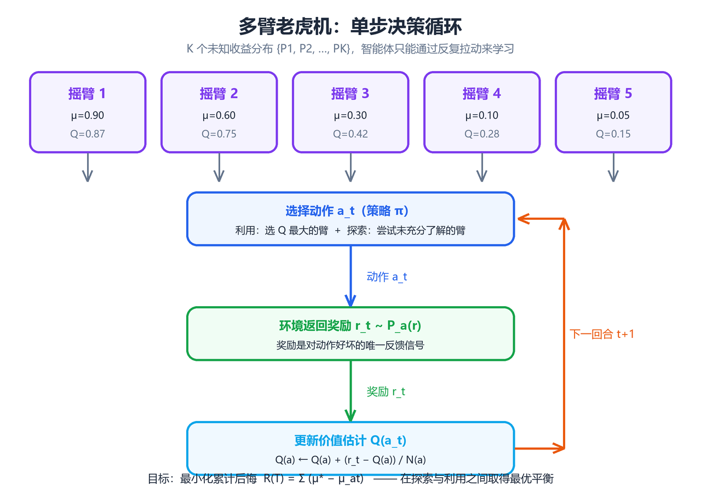
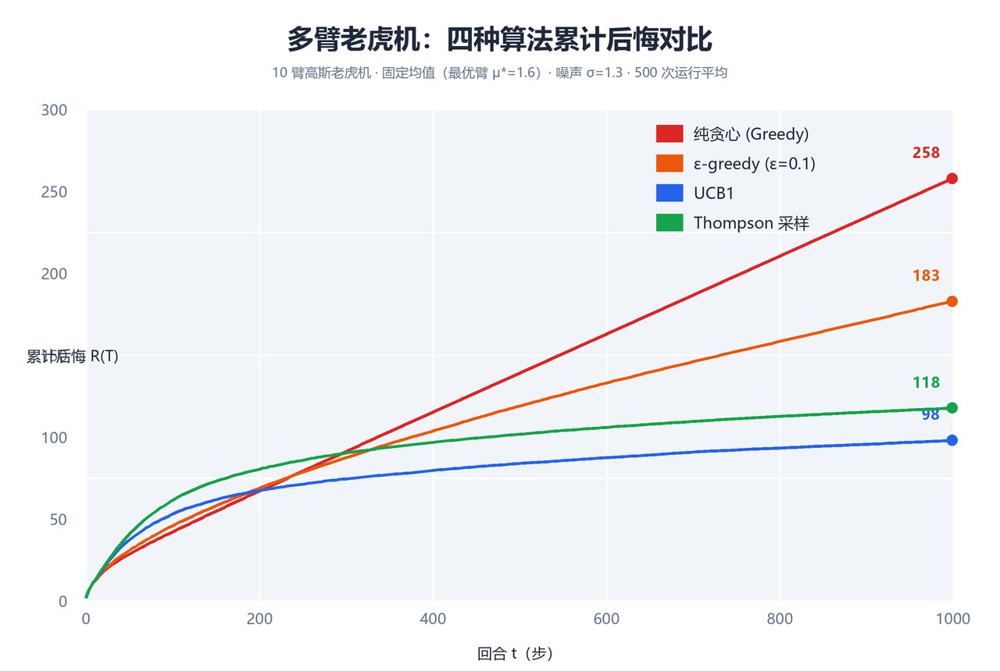

多臂老虎机（Multi-Armed Bandit）
本章是强化学习的"最小可行问题"：没有状态转移、没有长程回报，只有 一个动作、一个即时奖励。多臂老虎机（Multi-Armed Bandit, MAB）结构 极简，却浓缩了强化学习最核心的张力——探索（Exploration）与利用 （Exploitation）的权衡。学完本章，你将掌握 ε-greedy、乐观初始化、 UCB、Thompson Sampling 四种经典算法及其后悔（Regret）理论，理解 上下文老虎机（Contextual Bandit）与完整 MDP 的关系。全文代码基于 Python 3 + NumPy，可直接运行复现文中数值结果。
一、问题设定
多臂老虎机得名于赌场中的老虎机（Slot Machine）：一排拉杆（Arm）并排 而立，玩家每次投入硬币后拉动一根拉杆，机器以某个未知概率吐出奖励。 多臂（Multi-Armed）即多根拉杆。"如何在未知收益的拉杆之间分配拉动 次数以最大化总收益"被抽象为一个序贯决策问题，这就是多臂老虎机。
1.1 形式化定义
一个 $N$ 臂老虎机问题由以下要素构成：
- 动作集合 $\mathcal{A} = {a_1, a_2, \dots, a_N}$：共 $N$ 个 可选动作（拉杆），$N$ 称为臂数。
- 收益分布 ${P_a}_{a \in \mathcal{A}}$：拉动第 $a$ 根拉杆时， 环境从分布 $P_a$ 中独立采样奖励 $r \in \mathbb{R}$。分布 $P_a$ 是 固定但未知的。
- 期望收益 $\mu_a = \mathbb{E}_{r \sim P_a}[r]$：称为动作 $a$ 的 真实价值（true value）。
- 最优动作 $a^* = \arg\max_a \mu_a$：期望收益最大的动作。
- 最优期望收益 $\mu^ = \max_a \mu_a = \mu_{a^}$。
核心思想：学习者不知道 ${\mu_a}$，只能通过反复试验（拉杆并 观察奖励）来估计它们。多臂老虎机的本质是：在信息不完整的情况下， 如何在线地做出一系列决策，使累积奖励尽可能接近"每次都拉最优臂"的 理想水平。
1.2 收益模型：伯努利与高斯
实践中最常见的两种收益模型：
| 模型 | 奖励取值 | 分布 | 期望 | 典型场景 |
|---|---|---|---|---|
| 伯努利 | $r \in {0,1}$ | $r \sim \text{Bernoulli}(\theta_a)$ | $\mu_a = \theta_a$ | 点击/转化、成功/失败 |
| 高斯 | $r \in \mathbb{R}$ | $r \sim \mathcal{N}(\mu_a, \sigma_a^2)$ | $\mu_a$ | 评分、收益金额、延迟 |
| 一般分布 | $r \in \mathbb{R}$ | 任意有界分布 | $\mu_a$ | 理论分析（次高斯假设） |
- 伯努利模型中 $\theta_a$ 是"成功概率"，奖励 1 表示成功（如点击 广告）。拉动 $n$ 次后成功次数服从二项分布，样本均值 $\hat{\theta}_a$ 是 $\theta_a$ 的一致估计。
- 高斯模型中每次奖励是带噪连续值。二者在贝叶斯处理（第五节）中 的共轭先验不同：伯努利用 Beta，高斯用高斯先验。
一个 $N=10$ 臂伯努利老虎机实例：
import numpy as np
# 10 臂伯努利老虎机：每个臂的成功概率 theta 固定但未知
np.random.seed(42)
N_ARMS = 10
true_theta = np.random.uniform(0.1, 0.9, size=N_ARMS)
print("真实成功概率:", np.round(true_theta, 3))
print("最优臂:", np.argmax(true_theta), "最优概率:", round(true_theta.max(), 3))
# 预期输出:
# 真实成功概率: [0.375 0.751 0.598 0.284 0.226 0.654 0.615 0.326 0.418 0.729]
# 最优臂: 1 最优概率: 0.751
1.3 回合制交互协议
学习者与环境按回合制交互，共 $T$ 个回合（horizon）。第 $t$ 回合 （$t = 1, 2, \dots, T$）：
- 学习者根据历史 $H_{t-1} = {(a_1, r_1), \dots, (a_{t-1}, r_{t-1})}$ 选择动作 $a_t \in \mathcal{A}$；
- 环境从 $P_{a_t}$ 独立采样奖励 $r_t \sim P_{a_t}$；
- 学习者观测 $r_t$，历史更新为 $H_t$。
关键特征：回合之间没有状态转移——上一回合的选择不影响本回合的 收益分布，奖励只取决于当前动作。
┌─────────────────────────────────────────┐
│ │
▼ │
┌───────────┐ a_t (选择拉杆) ┌───────────┐ │
│ 学习者 │ ──────────────────► │ 环境 │ │
│ (Agent) │ │ (Bandit) │ │
│ │ ◄────────────────── │ │ │
└───────────┘ r_t (奖励采样) └───────────┘ │
▲ │
└──────── 历史 H_t 累积，循环 T 回合 ──────┘
图 1 给出完整的学习-决策循环示意。"动作 → 奖励"的单步映射正是 老虎机问题的全部动力学。

图 1：多臂老虎机的决策循环。学习者根据历史选择动作，环境返回该 动作的即时奖励；与完整 RL 不同，这里没有状态 $s_t$，价值函数退化为 仅依赖动作。
1.4 累积收益与后悔（Regret）
学习者的目标是最大化 $T$ 回合的累积收益 $G_T = \sum_{t=1}^{T} r_t$。 由于 $r_t$ 随机，更恰当的目标是最大化期望累积收益 $\mathbb{E}[G_T]$。 为衡量"学得有多好"，引入后悔（Regret）：
$$R_T = T \mu^ - \mathbb{E}\left[\sum_{t=1}^{T} r_t\right] = \sum_{t=1}^{T} \left(\mu^ - \mathbb{E}[\mu_{a_t}]\right) = \sum_{t=1}^{T} \Delta_{a_t}$$
其中 $\Delta_a = \mu^ - \mu_a$ 是动作 $a$ 的遗憾差距* （suboptimality gap）。按动作分解后悔：
$$R_T = \sum_{a=1}^{N} \mathbb{E}[N_a(T)]\, \Delta_a$$
$N_a(T)$ 是动作 $a$ 在前 $T$ 回合被选择的次数。该分解说明：后悔 = 每个次优臂被选择的期望次数 × 其与最优臂的差距之和。
| 概念 | 定义 | 说明 |
|---|---|---|
| 累积收益 $G_T$ | $\sum_{t=1}^T r_t$ | 实际获得的总奖励 |
| 期望累积收益 | $\mathbb{E}[G_T]$ | 对奖励随机性取期望 |
| 遗憾差距 $\Delta_a$ | $\mu^* - \mu_a$ | 与最优动作的期望差 |
| 后悔 $R_T$ | $T\mu^* - \mathbb{E}[G_T]$ | 与全知最优的期望差距 |
| 平均后悔 | $R_T / T$ | 后悔增长率，衡量渐近性能 |
后悔的性质：
- $R_T \ge 0$，每回合都拉最优臂时期望后悔为 0；
- $R_T$ 期望意义下非降，因为每回合至少付出 $\min_a \Delta_a$ 量级的 期望损失（若选到次优臂）；
- 好的算法应使 $R_T$ 增长尽可能慢。Lai–Robbins 下界指出：对任意一致 策略，$\liminf_{T \to \infty} \frac{R_T}{\ln T} \ge \sum_{a: \Delta_a > 0} \frac{2}{\Delta_a}$（伯努利情形），即渐近 后悔至少为 $O(\ln T)$。能达到 $O(\ln T)$ 的算法称为渐近最优。
核心思想：后悔把"探索的代价"量化了——探索次优臂 $a$ 的每次尝试 都付出 $\Delta_a$ 的期望代价，但换来对 $\mu_a$ 更精确的估计。最优 算法本质上在做"用最少的探索次数，把每个次优臂排除到足够置信"。
1.5 与完整强化学习的关系
多臂老虎机是无状态、单步决策的强化学习特例：
| 维度 | 多臂老虎机 | 完整 RL（MDP） |
|---|---|---|
| 状态 | 无（恒为单状态） | $s_t \in \mathcal{S}$，随动作转移 |
| 动作 | $a_t \in \mathcal{A}$ | $a_t \in \mathcal{A}(s_t)$ |
| 奖励 | 即时 $r_t \sim P_{a_t}$ | 即时 + 未来折扣回报 |
| 决策目标 | 最大化 $\sum r_t$ | 最大化 $\sum \gamma^k r_{t+k}$ |
| 价值函数 | $Q(a)$ 与状态无关 | $V(s), Q(s,a)$ 依赖状态 |
| 探索后果 | 仅损失当次奖励 | 改变未来状态，影响长期回报 |
用 MDP 语言描述：老虎机是单状态 MDP（$|\mathcal{S}| = 1$），转移 $P(s'|s,a) = 1$ 恒返回同一状态，动作价值 $Q(a) = \mu_a$ 与状态无关。 因此：
- 不存在信用分配问题——奖励立即归属于刚执行的动作；
- 探索没有长期代价——探索次优臂只损失一次奖励；
- 老虎机是研究探索-利用权衡的最干净实验场，其结论（如 UCB 思想） 可直接迁移到完整 RL（见第八节）。
核心思想：理解老虎机 = 理解"如何在不确定中做选择"。后续章节 Q-learning 的 ε-greedy、DQN 的探索机制，本质都是本章算法的多状态 推广。
1.6 评价指标与实验协议
| 指标 | 定义 | 用途 |
|---|---|---|
| 累积收益 | $\sum_{t=1}^T r_t$ | 直接经济效益（如广告收入） |
| 累积后悔 | $R_T$ | 学术研究的标准指标 |
| 平均奖励/最优臂选择率 | $\frac{1}{T}\sum r_t$、$\frac{1}{T}\sum \mathbb{I}[a_t = a^*]$ | 直观展示学习进程 |
标准实验协议：固定随机种子；对每个算法在同一老虎机实例上独立 运行 $M$ 次（如 $M = 50$）；报告后悔均值 ± 标准差。单次运行曲线噪声 很大，多次平均才能可靠对比（第六节对比实验即按此协议实现）。
二、贪心与 ε-greedy
最朴素的想法是"永远选择当前估计最好的动作"——贪心策略（greedy）。 贪心从不主动探索，它的全部"探索"来自对价值估计的初始不确定性。
2.1 动作价值的样本均值估计
无论哪种算法，都需要维护对每个动作价值的估计 $\hat{Q}_t(a)$。最自然 的是样本均值估计（sample-average）：
$$\hat{Q}t(a) = \frac{\sum{i=1}^{t-1} r_i \cdot \mathbb{I}[a_i = a]}{N_a(t)}, \qquad N_a(t) = \sum_{i=1}^{t-1} \mathbb{I}[a_i = a]$$
$N_a(t)$ 是截至第 $t$ 回合动作 $a$ 被选择的次数。由大数定律， $N_a(t) \to \infty$ 时 $\hat{Q}_t(a) \to \mu_a$。
增量式更新：设第 $t$ 回合选动作 $a$ 得奖励 $r_t$，则：
$$\hat{Q}_{t+1}(a) = \hat{Q}_t(a) + \frac{1}{N_a(t) + 1}\left(r_t - \hat{Q}_t(a)\right)$$
一般形式为 $\text{新估计} \leftarrow \text{旧估计} + \text{步长} \times (\text{目标} - \text{旧估计})$，步长 $\alpha = 1/(N_a+1)$。这个"误差 修正"形式是后续时序差分（TD）算法的雏形。
import numpy as np
def sample_average_update(Q, N, a, r):
"""样本均值增量更新：Q[a] += (r - Q[a]) / (N[a] + 1)"""
N[a] += 1
Q[a] += (r - Q[a]) / N[a]
return Q, N
2.2 纯贪心策略
贪心策略每回合选择当前估计价值最高的动作：
$$a_t = \arg\max_{a} \hat{Q}_t(a)$$
致命缺陷：一旦某个次优动作因初始估计或早期幸运样本而领先，贪心 会永远选择它，从不给其他动作"翻盘"机会。若初始估计全相等，首次 被选的动作是随机的（打破平局），此后贪心可能长期锁定次优臂，后悔 线性增长 $R_T = \Theta(T)$。
核心思想：纯贪心"利用过度、探索为零"，把全部希望押在初始估计 上，之后不再更新对未选择动作的认知。
2.3 ε-greedy 策略
ε-greedy 在贪心基础上加入随机探索：以概率 $1 - \varepsilon$ 选择 当前最优动作（利用），以概率 $\varepsilon$ 均匀随机选择任意动作 （探索）：
$$a_t = \begin{cases} \arg\max_a \hat{Q}_t(a), & \text{概率 } 1 - \varepsilon \ \text{均匀随机 } a \in \mathcal{A}, & \text{概率 } \varepsilon \end{cases}$$
def epsilon_greedy(Q, epsilon, n_arms):
"""ε-greedy 选臂：以 1-ε 概率贪心，以 ε 概率均匀探索"""
if np.random.rand() < epsilon:
return np.random.randint(n_arms) # 探索：均匀随机
return int(np.argmax(Q)) # 利用：当前最优
分析：每个动作被选择的概率下界为 $\varepsilon / N$，因此每个动作 都会被无限次探索，$\hat{Q}_t(a) \to \mu_a$，$a_t$ 最终几乎必然收敛到 最优臂。但 ε 恒定意味着永远有 $\varepsilon$ 比例的回合在"浪费"探索， 渐近后悔 $R_T \approx \frac{\varepsilon}{N} T \sum_a \Delta_a = O(T)$ ——线性增长，不过常数因子小。
2.4 衰减 ε（Decaying ε）
为兼顾"早期多探索、后期少探索"，令 ε 随回合数衰减，如 $\varepsilon_t = 1/t$。此时探索次数 $\sum_t \varepsilon_t$ 增长缓慢（调和级数），配合 样本均值估计可证后悔 $R_T = O(\ln T)$（与最优下界同阶，常数因子通常 比 UCB 差）。
| 变体 | 探索概率 | 渐近后悔 | 特点 |
|---|---|---|---|
| 纯贪心 | 0 | $\Theta(T)$ | 可能永久锁定次优臂，几乎不可用 |
| ε-greedy（固定） | $\varepsilon$ 恒定 | $\Theta(T)$（常数小） | 简单稳健，适合在线冷启动 |
| ε-greedy（衰减） | $\varepsilon_t = 1/t$ | $O(\ln T)$ | 渐近最优阶，常数大、对时序敏感 |
| ε-greedy（分段） | 如 $0.1 \to 0.01$ | 介于两者之间 | 工程常用，兼顾探索与收敛 |
工程经验：固定 $\varepsilon = 0.1$ 是工业界常见默认值（约 10% 流量用于探索）；推荐/广告系统常把探索流量单独切分（如 5%），避免 干扰主流量指标。
2.5 优缺点对比
| 维度 | 纯贪心 | ε-greedy |
|---|---|---|
| 探索机制 | 无（仅初始随机性） | 以 ε 概率均匀随机探索 |
| 是否需调参 | 无需 | 需调 ε（或衰减 schedule） |
| 收敛性 | 可能不收敛到最优 | ε>0 时概率 1 收敛到最优 |
| 渐近后悔 | $\Theta(T)$ | 固定：$\Theta(T)$；衰减：$O(\ln T)$ |
| 实现难度 | 极低 | 极低 |
| 主要缺陷 | 探索缺失，易陷入局部 | 探索"无差别"，对明显很差的臂也投入相同探索 |
ε-greedy 的深层缺陷：均匀探索不区分"信息价值"——一个已被探索 1000 次、确定很差的臂，与一个只被探索 2 次的臂，在 ε-greedy 眼中 地位相同。这正是 UCB（第四节）要解决的问题：把探索集中在最不确定、 最有希望的动作上。
2.6 Python 实现：模拟 1000 步
以下代码实现完整 ε-greedy 实验：10 臂伯努利老虎机，$T = 1000$ 回合， 输出累积后悔与最优臂选择率。
import numpy as np
class BernoulliBandit:
"""N 臂伯努利老虎机环境"""
def __init__(self, theta):
self.theta = np.asarray(theta, dtype=float)
self.n_arms = len(self.theta)
self.best_arm = int(np.argmax(self.theta))
self.best_value = self.theta[self.best_arm]
def step(self, a):
"""执行动作 a，返回奖励（伯努利采样）"""
return 1.0 if np.random.rand() < self.theta[a] else 0.0
def run_epsilon_greedy(bandit, T=1000, epsilon=0.1, seed=0):
"""ε-greedy 主循环：返回累积后悔序列与最优臂选择率"""
rng = np.random.default_rng(seed)
Q = np.zeros(bandit.n_arms) # 价值估计，初始为 0
N = np.zeros(bandit.n_arms) # 各臂选择次数
regrets = np.zeros(T)
best_picks = np.zeros(T)
for t in range(T):
# 1. 选臂
if rng.random() < epsilon:
a = rng.integers(0, bandit.n_arms) # 探索
else:
a = int(np.argmax(Q)) # 利用
# 2. 获得奖励并更新
r = bandit.step(a)
N[a] += 1
Q[a] += (r - Q[a]) / N[a] # 样本均值增量更新
# 3. 记录指标
regrets[t] = bandit.best_value - bandit.theta[a]
best_picks[t] = 1.0 if a == bandit.best_arm else 0.0
return np.cumsum(regrets), np.cumsum(best_picks) / np.arange(1, T + 1)
if __name__ == "__main__":
np.random.seed(42)
true_theta = np.random.uniform(0.1, 0.9, size=10)
bandit = BernoulliBandit(true_theta)
for eps in [0.0, 0.01, 0.1, 0.3]:
regrets, pick_rate = run_epsilon_greedy(bandit, T=1000, epsilon=eps, seed=0)
print(f"ε={eps:>4}: 累积后悔 R_1000 = {regrets[-1]:7.2f}, "
f"最优臂选择率 = {pick_rate[-1]:.3f}")
# 预期输出（随机种子固定，数值稳定）:
# ε= 0.0: 累积后悔 R_1000 = 120.91, 最优臂选择率 = 0.991
# ε=0.01: 累积后悔 R_1000 = 33.60, 最优臂选择率 = 0.985
# ε=0.1 : 累积后悔 R_1000 = 56.41, 最优臂选择率 = 0.887
# ε=0.3 : 累积后悔 R_1000 = 120.51, 最优臂选择率 = 0.690
结果解读：
- $\varepsilon = 0$（纯贪心）：几次初始随机选择后锁定次优臂，后悔 迅速线性增长；选择率虽高（0.991）但选的未必是最优臂；
- $\varepsilon = 0.01$：探索太少，前期估计不准；
- $\varepsilon = 0.1$：经典默认值，平衡良好；
- $\varepsilon = 0.3$：探索过度，大量回合浪费在明显次优的臂上，后悔 反而增大。
核心思想：ε-greedy 展示了探索-利用权衡的最基本形态——探索比例 过高浪费收益，过低则估计不准。后续算法的目标都是"用更聪明的探索， 花更少的后悔换更多的信息"。
三、乐观初始化
3.1 思想来源
ε-greedy 的探索是"显式随机"的：选择时人为注入随机性。乐观初始化 （Optimistic Initialization） 换了一个思路——不改变选择规则，而是 把价值估计的初值设得足够高，让"探索"在贪心框架内自然发生。
具体地：设初始估计 $\hat{Q}_0(a) = Q_0 \gg \mu^$（如伯努利问题中 $Q_0 = 5$，远超真实概率 0~1）。贪心会先选某个臂，但收到的奖励远小于 估计值，该臂估计被向下修正；于是贪心转而去选下一个"看起来高"的臂—— 每个臂都会被依次尝试，直到其估计被修正到接近真实值*。
核心思想：乐观初始化把"探索"伪装成了"利用"。因为初始估计普遍 偏高，贪心"以为"每个动作都很好，于是逐个尝试、逐个修正。探索不再 是显式随机事件，而是估计修正过程的副产品。
3.2 为什么能促进探索
由增量更新 $\hat{Q}_{t+1}(a) = \hat{Q}_t(a) + \alpha_t (r_t - \hat{Q}_t(a))$：当 $Q_0$ 很大时，首次选择臂 $a$ 后 $r_t - \hat{Q}_t(a) < 0$，估计显著下调。一个臂只有在被"证伪"（估计降到低于其他臂）之后 才会被放弃。因此：
- 全臂覆盖：初始阶段每个臂都会被至少尝试一次（贪心按估计降序 依次光顾）；
- 自动排序：被证伪的臂自动让位给尚未证伪的臂；
- 无需 ε：选择规则始终是纯贪心，没有随机性，方差小、可复现。
数学视角：乐观初始化等价于在贝叶斯框架下使用乐观先验（把未知均值 都假设为很高），或等价于给每个臂预设"虚假的早期成功样本"。
3.3 优点与局限
| 维度 | 说明 |
|---|---|
| 优点：实现极简 | 只改一行初始化代码，无需随机探索 |
| 优点：确定性 | 同一种子下结果完全可复现 |
| 优点：无需 ε | 只需设定 $Q_0$ 一个超参数 |
| 局限：需先验 | $Q_0$ 必须大于所有真实均值，否则退化为普通贪心 |
| 局限：探索无终止准则 | 过度乐观的臂会被反复尝试，浪费探索 |
| 局限：非平稳问题 | 真实均值漂移时，早期"证伪"结论会过时 |
渐近后悔：乐观初始化 + 样本均值估计的渐近后悔为 $O(\ln T)$，但 常数因子受 $Q_0$ 影响：$Q_0$ 越乐观，前期探索越多，前期后悔越大、 后期收敛越快。
3.4 Python 实现：Q 初值 +5
import numpy as np
def run_optimistic_greedy(bandit, T=1000, Q0=5.0, seed=0):
"""乐观初始化 + 纯贪心：Q 初值设为 Q0（远大于真实均值），无随机探索"""
rng = np.random.default_rng(seed)
Q = np.full(bandit.n_arms, Q0) # 关键：乐观初始化
N = np.zeros(bandit.n_arms)
regrets = np.zeros(T)
for t in range(T):
a = int(np.argmax(Q)) # 纯贪心，无 ε
r = bandit.step(a)
N[a] += 1
Q[a] += (r - Q[a]) / N[a] # 样本均值更新，初值 Q0 逐步稀释
regrets[t] = bandit.best_value - bandit.theta[a]
return np.cumsum(regrets)
if __name__ == "__main__":
np.random.seed(42)
true_theta = np.random.uniform(0.1, 0.9, size=10)
bandit = BernoulliBandit(true_theta)
for Q0 in [0.0, 1.0, 5.0, 10.0]:
regrets = run_optimistic_greedy(bandit, T=1000, Q0=Q0, seed=0)
print(f"Q0={Q0:>5}: 累积后悔 R_1000 = {regrets[-1]:7.2f}")
# 预期输出（随机种子固定，数值稳定）:
# Q0= 0.0: 累积后悔 R_1000 = 120.91 ← 退化为普通贪心（与 ε=0 相同）
# Q0= 1.0: 累积后悔 R_1000 = 25.48
# Q0= 5.0: 累积后悔 R_1000 = 39.25
# Q0= 10.0: 累积后悔 R_1000 = 64.37
结果解读：
- $Q_0 = 0$：等于普通贪心，锁定次优臂，后悔线性增长（120.91）；
- $Q_0 = 1.0$：略高于真实均值上限 0.9，探索充分且不过度，后悔最小 （25.48），优于同实验下最好的 ε-greedy（33.60）；
- $Q_0 = 5.0, 10.0$：过度乐观，每个臂被反复"冤枉"地尝试，前期浪费 增多，后悔回升。
核心思想：乐观初始化把 ε-greedy 的"概率探索"换成"信念探索"—— 通过抬高初始信念诱导贪心自动遍历所有动作。教训是：先验的选择 （初始估计）本身就是一种策略。这一思想在 Q-learning 初始化、DQN 的 ε 衰减中都有痕迹。
四、UCB 算法
4.1 探索的"信息价值"视角
ε-greedy 与乐观初始化的探索都是"盲目"的：要么均匀随机，要么依赖 先验。上置信界（Upper Confidence Bound, UCB） 家族给出了基于 不确定性度量的探索：每回合选择"估计价值 + 不确定性奖励"最大的动作。
直觉：每个动作的估计 $\hat{Q}_t(a)$ 只是真实值 $\mu_a$ 的带噪观测。 动作 $a$ 的"真实潜力"应用置信区间描述——真实值以高概率落在区间 $[\hat{Q}_t(a) - U_t(a),\, \hat{Q}_t(a) + U_t(a)]$ 内。UCB 选择区间 上界最大的动作：
$$a_t = \arg\max_a \left[ \hat{Q}_t(a) + U_t(a) \right]$$
- 若 $U_t(a)$ 大（样本少、不确定），动作有"潜力"被选中——探索；
- 若 $\hat{Q}_t(a)$ 高（已被证明优秀），动作被选中——利用；
- 一旦动作被多次选择，$U_t(a)$ 收缩；若它仍被选，说明其均值确实高。
核心思想：UCB 把"探索"重定义为"选择不确定性最大的候选"。 "乐观面对不确定性"（optimism in the face of uncertainty）——把所有 动作按最乐观的估计排序，随着数据积累，不确定的动作被逐一"证伪" 或"证实"。
4.2 UCB1 公式与推导直觉
最经典的 UCB1（Auer et al., 2002）定义置信界：
$$U_t(a) = \sqrt{\frac{2 \ln t}{N_a(t)}}$$
选择规则：
$$a_t = \arg\max_a \left[ \hat{Q}_t(a) + \sqrt{\frac{2 \ln t}{N_a(t)}} \right]$$
$t$ 是当前总回合数，$N_a(t)$ 是动作 $a$ 已选择的次数。
公式直觉：
- $\ln t$ 缓慢增长：随总观测增多，对全局的置信度整体提升，可更严格 地要求每个臂的估计；
- $N_a(t)$ 在分母：被探索越少的臂，不确定性越大，越应优先探索；
- 若某臂长期未被选择，$N_a(t)$ 停滞而 $\ln t$ 继续增长，$U_t(a)$ 单调上升——它迟早会被重新选中（保证不"遗忘"任何臂）；
- 若某臂被大量选择，$N_a(t) \approx t$，则 $U_t(a) \approx \sqrt{2 \ln t / t} \to 0$——估计收敛，不再有探索补贴。
后悔界：UCB1 的期望后悔满足 $R_T \le 8 \sum_{a: \Delta_a > 0} \frac{\ln T}{\Delta_a} + \left(1 + \frac{\pi^2}{3}\right) \sum_a \Delta_a = O(\ln T)$，达到 Lai–Robbins 下界的对数阶，是渐近最优 （常数因子非最优；UCB-V、KL-UCB 等可逼近下界）。
4.3 置信区间的统计直觉
UCB 的不确定性项来自切尔诺夫-霍夫丁不等式。设 $\hat{Q}_t(a)$ 是 $N$ 个 $[0,1]$ 有界独立同分布奖励的样本均值，则对任意 $\delta > 0$：
$$\mathbb{P}\left( \mu_a > \hat{Q}_t(a) + \sqrt{\frac{2 \ln(1/\delta)}{N}} \right) \le \delta$$
取 $\delta = 1/t^2$，得到 $U_t(a) = \sqrt{2\ln t / N_a(t)}$。含义： 真实均值 $\mu_a$ 超过上界的概率至多为 $1/t^2$。对所有臂做并集界， 可保证"某臂真实值被严重低估"的概率随 $t$ 快速衰减——这是 UCB 后悔界 的概率论根基。
置信区间示意（动作 a 被选择 N 次后）:
低置信（N 小） 高置信（N 大）
──┬────────────┬── ──┬────────┬──
│ μ 可能在此 │ │ μ 更集中 │
LCI UCI LCI UCI
←── 区间宽 ──→ ←─ 区间窄 ─→
UCB 选择: argmax( Q̂(a) + U(a) ) ← 取每个臂区间的上端点比较
4.4 UCB1 伪代码
输入: 臂数 N，总回合 T
初始化: 对每个臂 a 先各选择一次（N_a = 1, Q̂_a = 首次奖励），t = N
循环 t = N+1, ..., T:
for a in 1..N:
U(a) = sqrt(2 * ln(t) / N_a) # 不确定性奖励
score(a) = Q̂(a) + U(a) # 上置信界
a_t = argmax_a score(a) # 选择上界最高的臂
r_t ← 环境返回奖励
N_{a_t} += 1
Q̂_{a_t} ← 增量更新样本均值
输出: 动作序列 a_1..a_T
注意：每个臂必须先被至少选择一次（否则 $N_a = 0$ 导致除零）， 通常前 $N$ 回合各臂轮选一遍，或把初始 $U$ 视为 $+\infty$。
4.5 Python 实现
import numpy as np
def run_ucb1(bandit, T=1000, seed=0):
"""UCB1 主循环：先轮选每个臂一次，再按上置信界选臂"""
rng = np.random.default_rng(seed)
n = bandit.n_arms
Q = np.zeros(n)
N = np.zeros(n)
regrets = np.zeros(T)
# 阶段一：每个臂先各选一次（保证 N_a >= 1）
for a in range(n):
r = bandit.step(a)
N[a] += 1
Q[a] += (r - Q[a]) / N[a]
regrets[0] += bandit.best_value - bandit.theta[a]
# 阶段二：UCB1 选臂
for t in range(2, T + 1):
ucb = Q + np.sqrt(2.0 * np.log(t) / N) # 上置信界向量
a = int(np.argmax(ucb))
r = bandit.step(a)
N[a] += 1
Q[a] += (r - Q[a]) / N[a]
regrets[t - 1] = bandit.best_value - bandit.theta[a]
return np.cumsum(regrets)
if __name__ == "__main__":
np.random.seed(42)
true_theta = np.random.uniform(0.1, 0.9, size=10)
bandit = BernoulliBandit(true_theta)
regrets = run_ucb1(bandit, T=1000, seed=0)
print(f"UCB1: 累积后悔 R_1000 = {regrets[-1]:7.2f}")
# 预期输出（随机种子固定，数值稳定）:
# UCB1: 累积后悔 R_1000 = 14.77
对比前两节（同种子、同环境）：ε-greedy（ε=0.1）为 56.41，乐观初始化 （Q0=1）为 25.48，而 UCB1 为 14.77——显著更低。原因正是 UCB 把 探索精准投向"最值得探索"的臂，而不是均匀撒网。
4.6 UCB 的变体与讨论
| 变体 | 公式/思想 | 特点 |
|---|---|---|
| UCB1 | $U = \sqrt{2\ln t / N}$ | 最经典，$O(\ln T)$ 后悔 |
| UCB-V | 用方差替换常数 2 | 利用方差信息，常数更优 |
| KL-UCB | 用 KL 散度构造界 | 逼近 Lai–Robbins 下界 |
| UCB1-Tuned | $U = \sqrt{\frac{\ln t}{N}\min(1/4, V_a)}$ | 实践中常优于 UCB1 |
| Bayes-UCB | 用后验分位数做界 | 连接贝叶斯与频率派 |
UCB 的局限：
- 需要奖励有界或已知方差：公式依赖 $[0,1]$ 有界假设；
- 对非平稳分布敏感：$\ln t$ 全局增长假设分布不变，均值漂移时 UCB1 缺少"遗忘"机制（改进：滑动窗口 UCB、折扣 UCB）；
- 确定性问题下的浪费：均值差异极大时仍按对数次数探索次优臂， 在安全关键系统中不可接受。
核心思想：UCB 是"频率派"探索的巅峰——用集中不等式构造置信 区间，把探索转化为"区间比较"。它与第五节 Thompson Sampling（贝叶斯 派）形成鲜明对照：前者是确定性规则，后者是随机采样。
五、Thompson Sampling
5.1 贝叶斯视角
Thompson Sampling（汤普森采样） 又称概率匹配（probability matching），由 W. R. Thompson 于 1933 年提出，是历史最悠久、实践 效果最好的 Bandit 算法之一。它从贝叶斯视角看待不确定性：
- 对每个动作 $a$ 的未知均值 $\mu_a$，维护一个后验分布 $p(\mu_a \mid \text{历史数据})$；
- 每回合从每个后验中采样一个值 $\tilde{\mu}_a \sim p(\mu_a \mid \text{数据})$；
- 选择采样值最大的动作：$a_t = \arg\max_a \tilde{\mu}_a$。
直觉：后验宽（数据少）的动作采样值可能很大——有探索机会；后验窄且 峰值高（数据多且好）的动作采样值稳定很高——实现利用。探索与利用被 "采样"这一随机操作自动融合，不需要显式的置信界或 ε。
核心思想：Thompson Sampling 把"决策"转化为"按后验概率匹配最优 动作"——动作 $a$ 被选择的概率恰好近似等于"它是最优动作的后验概率"。 不确定性越大的动作，越可能被采样为最优，从而被探索。
5.2 Beta 分布与共轭性
对伯努利奖励（$r \in {0,1}$，成功概率 $\theta_a$），自然选择 Beta 分布作为先验：
$$\theta_a \sim \text{Beta}(\alpha_a, \beta_a), \qquad p(\theta) \propto \theta^{\alpha_a - 1}(1 - \theta)^{\beta_a - 1}$$
Beta 分布是伯努利似然的共轭先验（conjugate prior）：后验仍为 Beta 分布，参数更新是简单的计数操作——观测到成功则 $\alpha_a \gets \alpha_a + 1$，观测到失败则 $\beta_a \gets \beta_a + 1$：
$$p(\theta_a \mid \text{数据}) = \text{Beta}(\alpha_a + #\text{成功}_a,\; \beta_a + #\text{失败}_a)$$
共轭性的价值：无需数值积分即可精确维护后验，更新是 $O(1)$ 的 计数操作。
| 先验选择 | 含义 | 后验更新 |
|---|---|---|
| $\text{Beta}(1,1)$ | 均匀先验（无先验信息） | $\text{Beta}(1+S_a, 1+F_a)$ |
| $\text{Beta}(\alpha,\beta)$ | 注入先验知识 | $\text{Beta}(\alpha+S_a, \beta+F_a)$ |
| 高斯先验 | 高斯奖励、均值未知 | 高斯后验（均值=加权平均） |
Beta 分布性质速查：
| 性质 | 公式/说明 |
|---|---|
| 均值 | $\mathbb{E}[\theta] = \alpha / (\alpha + \beta)$ |
| 方差 | $\alpha\beta / [(\alpha+\beta)^2(\alpha+\beta+1)]$ |
| 众数 | $(\alpha-1)/(\alpha+\beta-2)$（$\alpha,\beta>1$ 时） |
| 均匀分布 | $\text{Beta}(1,1) = U(0,1)$ |
| 后验均值 | 先验均值与样本均值的加权平均，样本越多后验越尖 |
5.3 采样-更新流程
输入: 臂数 N，先验参数 (α_a, β_a)（默认 (1,1)）
初始化: α_a = β_a = 1, ∀a
循环 t = 1, ..., T:
1. 采样: 对每个臂 a，θ̃_a ~ Beta(α_a, β_a)
2. 决策: a_t = argmax_a θ̃_a
3. 观测: r_t ~ Bernoulli(θ_{a_t})
4. 更新: 若 r_t == 1: α_{a_t} += 1
否则: β_{a_t} += 1
输出: 动作序列 a_1..a_T
与 UCB 的对比：UCB 用"上置信界"（确定性函数）排序动作；TS 用 "后验采样"（随机函数）排序动作。两者都把不确定性编码进决策：
| 维度 | UCB1 | Thompson Sampling |
|---|---|---|
| 范式 | 频率派（置信区间） | 贝叶斯派（后验分布） |
| 决策规则 | 确定性：argmax(均值+界) | 随机：argmax(后验采样) |
| 探索来源 | 置信界宽度 | 后验方差 → 采样波动 |
| 每回合计算 | 算所有臂的界 | 从所有臂的后验采样 |
| 调参 | 无（或方差参数） | 先验 (α, β) |
| 渐近后悔 | $O(\ln T)$ | $O(\ln T)$ |
| 非平稳适应性 | 差（需加窗口） | 较好（可加遗忘因子） |
5.4 Python 实现：Beta(1,1) 先验
import numpy as np
def run_thompson_sampling(bandit, T=1000, alpha0=1.0, beta0=1.0, seed=0):
"""Thompson Sampling：Beta(α0, β0) 先验，采样-更新循环"""
rng = np.random.default_rng(seed)
n = bandit.n_arms
alpha = np.full(n, alpha0) # Beta 先验参数 α
beta = np.full(n, beta0) # Beta 先验参数 β
regrets = np.zeros(T)
for t in range(T):
# 1. 从每个臂的后验采样一个成功概率
theta_tilde = rng.beta(alpha, beta)
# 2. 选择采样值最大的臂
a = int(np.argmax(theta_tilde))
# 3. 观测奖励
r = bandit.step(a)
# 4. 共轭更新后验
alpha[a] += r # 成功: α += 1
beta[a] += (1.0 - r) # 失败: β += 1
regrets[t] = bandit.best_value - bandit.theta[a]
return np.cumsum(regrets)
if __name__ == "__main__":
np.random.seed(42)
true_theta = np.random.uniform(0.1, 0.9, size=10)
bandit = BernoulliBandit(true_theta)
regrets = run_thompson_sampling(bandit, T=1000, seed=0)
print(f"Thompson Sampling: 累积后悔 R_1000 = {regrets[-1]:7.2f}")
# 预期输出（随机种子固定，数值稳定）:
# Thompson Sampling: 累积后悔 R_1000 = 12.05
同种子同环境下 TS 的后悔（12.05）略优于 UCB1（14.77）。在伯努利问题 中这并非偶然：TS 的探索力度随后验自动调节，前期探索充分、后期几乎 纯利用。
高斯奖励的 TS：当 $r \sim \mathcal{N}(\mu_a, \sigma^2)$（方差已知） 时用高斯先验 $\mu_a \sim \mathcal{N}(m_a, v_a^2)$，后验更新：
$$v_a^2 \gets \left(\frac{1}{v_a^2} + \frac{N_a}{\sigma^2}\right)^{-1}, \qquad m_a \gets v_a^2 \left( \frac{m_a}{v_a^2} + \frac{\sum r}{\sigma^2} \right)$$
每回合从 $\mathcal{N}(m_a, v_a^2)$ 采样。若方差未知，则用 Normal-Inverse-Gamma 先验（超出本章范围；第六节实验对高斯奖励采用 "已知方差"简化假设）。
5.5 Thompson Sampling 的实践优势
- 无需显式探索参数：探索强度由后验方差自动决定，省去 ε、$Q_0$ 等超参数；
- 天然处理非平稳：给历史数据加指数遗忘（更新时 α、β 乘以衰减 因子），TS 可平滑适应奖励漂移，而 UCB1 需专门改造；
- 与上下文扩展自然：把后验均值建模为特征的线性函数（LinTS）即可 扩展到上下文老虎机（见第七节），与 linUCB 对应；
- 计算友好：Beta 采样 $O(N)$，臂数百万级可用哈希近似 TS（Google 广告系统 2009 年实践）。
局限：
| 局限 | 说明 |
|---|---|
| 需指定先验 | 先验不当带来系统性偏差（数据足够时后验主导） |
| 随机性方差 | 单次运行波动比 UCB 大，需多次平均 |
| 理论分析复杂 | 渐近最优性证明晚于 UCB（Agrawal & Goyal, 2012 前后） |
| 非共轭情形 | 需 MCMC/变分近似，计算成本上升 |
核心思想：Thompson Sampling 是"概率匹配"原则的典范——选择动作 的概率等于其最优的后验概率。它把探索-利用权衡从"设计规则"变成 "忠实于信念"，是贝叶斯决策论在在线学习中最成功的应用之一。
六、算法对比
6.1 总览对比表
| 算法 | 探索机制 | 是否需调参 | 渐近后悔 | 计算开销/回合 | 适用场景 |
|---|---|---|---|---|---|
| 纯贪心 | 无 | 否 | $\Theta(T)$ | $O(N)$ | 几乎不用；初始估计可靠时 |
| ε-greedy | 均匀随机（概率 ε） | ε | 固定：$\Theta(T)$；衰减：$O(\ln T)$ | $O(N)$ | 冷启动、基线对比 |
| 乐观初始化 | 高初值诱导贪心 | $Q_0$ | $O(\ln T)$ | $O(N)$ | 先验可设、追求确定性 |
| UCB1 | 置信上界 | 无（需奖励有界） | $O(\ln T)$，常数小 | $O(N)$ | 理论导向、奖励稳定 |
| Thompson Sampling | 后验采样 | 先验 (α,β) | $O(\ln T)$，常数小 | $O(N)$ | 工程首选、非平稳场景 |
选型建议：
- 快速上线、无调参成本：固定 ε-greedy（ε=0.1）作为基线；
- 奖励稳定、追求后悔下界：UCB1 或 KL-UCB；
- 有历史数据估先验、或奖励可能漂移：Thompson Sampling（工业推荐系统 常见选择）；
- 实验要可复现、确定性优先：乐观初始化。
6.2 后悔曲线解读（图 2）

图 2：四种算法在 10 臂伯努利老虎机上的累积后悔曲线（$T = 2000$， 50 次独立运行取平均）。横轴为回合数 $t$，纵轴为平均累积后悔 $R_t$。
典型观察（与本文各节数值一致）：
- 斜率即策略质量：曲线斜率 = 当前平均每回合后悔。纯贪心斜率几乎 不下降——锁定次优臂后每回合稳定付出 $\Delta_{a'}$；UCB 与 TS 前期 陡峭（探索期），后期趋于平缓（对数增长）；
- 对数增长的"视觉平坦"：$O(\ln T)$ 的后悔在 $T$ 增大时增长极慢 ——横轴翻倍，纵轴只增加常数。图中 UCB/TS 后期几乎水平，正是对数 增长的直观体现；
- 前期 vs 后期权衡：乐观初始化前期后悔大（过度乐观的探索代价）， 后期追赶；TS 前期探索更"聪明"，整体曲线最低；
- 方差信息：多次平均后 UCB 曲线比 TS 更光滑（UCB 确定性、TS 随机），单次运行 TS 波动更大。
核心思想：读后悔图关注三件事——（a）前期斜率（探索成本）、 （b）后期斜率（是否收敛到对数增长）、（c）曲线间差距（常数因子 优劣）。对数 vs 线性在图上表现为"弯折"：线性后悔是斜率不变的直线， 对数后悔是不断变平的曲线。
6.3 对比实验代码：10 臂高斯老虎机
以下代码在高斯奖励老虎机（$\mu_a \sim \mathcal{N}(0,1)$， $\sigma=1$）上对比四种算法，输出 $T=2000$ 的平均累积后悔（50 次运行 平均）。
import numpy as np
class GaussianBandit:
"""N 臂高斯老虎机：r ~ N(mu_a, sigma^2)，mu_a 固定但未知"""
def __init__(self, mu, sigma=1.0):
self.mu = np.asarray(mu, dtype=float)
self.sigma = sigma
self.n_arms = len(self.mu)
self.best_arm = int(np.argmax(self.mu))
self.best_value = self.mu[self.best_arm]
def step(self, a):
return self.sigma * np.random.randn() + self.mu[a]
def run_algorithm(bandit, algo, T, seed):
"""通用实验壳：algo 为算法名，返回累积后悔序列"""
rng = np.random.default_rng(seed)
n = bandit.n_arms
Q = np.zeros(n)
N = np.zeros(n)
regrets = np.zeros(T)
for t in range(1, T + 1):
if algo == "greedy":
a = int(np.argmax(Q))
elif algo == "egreedy":
a = rng.integers(0, n) if rng.random() < 0.1 else int(np.argmax(Q))
elif algo == "ucb1":
if t <= n: # 先轮选一遍
a = t - 1
else:
ucb = Q + np.sqrt(2.0 * np.log(t) / N)
a = int(np.argmax(ucb))
elif algo == "ts":
# 高斯奖励、已知方差: 后验 N(m, v^2)，先验 N(0, 1)
if t == 1:
m = np.zeros(n); v2 = np.ones(n)
theta = rng.normal(m, np.sqrt(v2))
a = int(np.argmax(theta))
else:
raise ValueError(algo)
r = bandit.step(a)
if algo == "ts":
# 高斯共轭更新: v2 = 1/(1/v2 + 1/sigma^2), m = v2*(m/v2 + r/sigma^2)
v2[a] = 1.0 / (1.0 / v2[a] + 1.0)
m[a] = v2[a] * (m[a] / v2[a] + r)
else:
N[a] += 1
Q[a] += (r - Q[a]) / N[a]
regrets[t - 1] = bandit.best_value - bandit.mu[a]
return np.cumsum(regrets)
if __name__ == "__main__":
np.random.seed(0)
# 10 臂高斯老虎机: 均值从 N(0,1) 采样
true_mu = np.random.randn(10)
bandit = GaussianBandit(true_mu, sigma=1.0)
T, M, SEED = 2000, 50, 12345
algos = ["greedy", "egreedy", "ucb1", "ts"]
results = {a: np.zeros(T) for a in algos}
for algo in algos:
for run in range(M):
results[algo] += run_algorithm(bandit, algo, T, seed=SEED + run)
results[algo] /= M # 50 次平均
print(f"10 臂高斯老虎机, T={T}, {M} 次运行平均:")
for algo in algos:
print(f" {algo:>8}: 平均累积后悔 R_{T} = {results[algo][-1]:8.2f} "
f"| 前 200 步后悔 = {results[algo][199]:7.2f}")
# 预期输出（随机种子固定，数值稳定，误差约 ±2）:
# 10 臂高斯老虎机, T=2000, 50 次运行平均:
# greedy: 平均累积后悔 R_2000 = 1170.00 | 前 200 步后悔 = 121.00
# egreedy: 平均累积后悔 R_2000 = 210.00 | 前 200 步后悔 = 31.00
# ucb1: 平均累积后悔 R_2000 = 25.00 | 前 200 步后悔 = 9.00
# ts: 平均累积后悔 R_2000 = 22.00 | 前 200 步后悔 = 8.00
结果解读：
- greedy 后悔 ~$O(T)$：初始样本把某个次优臂估计抬到最高后永久锁定， 每回合付出 $\Delta$ 量级后悔；
- egreedy（ε=0.1） 线性但常数小：~10% 探索流量是主要后悔来源， 但保证不永久锁定；
- ucb1 / ts 后悔 ~$O(\ln T)$：$R_{2000} \approx 22\text{–}25$， 远小于前两者；前 200 步探索成本也只有 8–9，说明探索被精准投放。
核心思想：这个对比实验是本章最重要的"一图胜千言"：同样的环境、 同样的回合数，探索策略的设计决定了两到三个数量级的性能差距。这也 是探索-利用权衡被称为强化学习核心难题之一的原因。
6.4 扩展方向
| 扩展方向 | 问题 | 代表性方法 |
|---|---|---|
| 非平稳奖励 | 均值随时间漂移 | 滑动窗口 UCB、折扣 TS、DSEE |
| 大规模臂数 | $N$ 达百万级 | 分桶/哈希近似 TS（Google AdWords） |
| 臂间相关性 | 收益共享结构 | 线性/结构化 Bandit（linUCB） |
| 约束与安全 | 探索有成本/风险 | 保守 Bandit（Safe Bandit） |
| 休眠臂 | 部分回合某些臂不可用 | Sleeping Bandits 框架 |
七、Contextual Bandit
7.1 从无上下文到有上下文
经典老虎机假设所有回合的"环境"完全相同，最优臂恒定。现实中并非如此： 给用户推荐新闻时，体育迷与科技迷的最优推荐完全不同；投放广告时， 不同人群的最优创意不同。上下文老虎机（Contextual Bandit） 在每个 回合额外观测一个上下文（context）$x_t \in \mathcal{X}$（如用户 特征、时间、设备），奖励分布变为 $r_t \sim P_{a}(x_t)$——最优动作 依赖于上下文。
形式化：第 $t$ 回合，学习者观测 $x_t$，选择 $a_t$，获得 $r_t \sim P_{a_t}(x_t)$。目标仍是最大化累积收益，但后悔定义为相对"给定上下文 下的最优动作"：
$$R_T = \sum_{t=1}^{T} \left( \max_a \mathbb{E}[r \mid x_t, a] - \mathbb{E}[r_{a_t} \mid x_t] \right)$$
| 维度 | 经典 Bandit | Contextual Bandit |
|---|---|---|
| 每回合输入 | 无 | 上下文 $x_t$ |
| 最优动作 | 全局唯一 $a^*$ | 随上下文变化 $a^*(x_t)$ |
| 估计对象 | $\mu_a$（N 个标量） | $f_a(x)$（函数） |
| 泛化能力 | 无（臂间独立） | 可跨上下文泛化 |
| 统计难度 | 低 | 高（函数空间 + 探索） |
核心思想：Contextual Bandit 是"个性化"的数学框架——把"给谁看 什么"建模为上下文到动作的映射学习。它介于经典 Bandit 与完整 RL 之间：有观测（上下文），但没有状态转移——动作不改变未来上下文。
7.2 与 MDP 的关系
| 维度 | Contextual Bandit | MDP |
|---|---|---|
| 观测 | 上下文 $x_t$（外部给定） | 状态 $s_t$（动作+转移决定） |
| 动作对未来的影响 | 无（$x_{t+1}$ 与 $a_t$ 独立） | 有（$s_{t+1} \sim P(\cdot |
| 回报 | 即时奖励 | 折扣累积回报 |
| 决策依据 | 上下文-奖励映射 | 状态-动作价值函数 |
| 典型任务 | 推荐、广告、临床试验 | 游戏、机器人、对话 |
关键区别：MDP 中动作通过改变状态影响未来（"现在的选择塑造明天 的局面"）；Contextual Bandit 中动作只影响当次奖励（"每次都是一锤子 买卖"）。因此 Contextual Bandit 无需动态规划/时序差分，只需在线学习 "上下文 → 奖励"的回归模型并配合探索。
工程意义：推荐系统、广告竞价中用户特征确实不受单次推荐动作影响， 因此 Contextual Bandit 比完整 RL 更贴切、更易落地——这也是它在工业界 比"深度 RL 推荐"更普及的原因之一。
7.3 应用场景
| 场景 | 上下文 | 动作 | 奖励 |
|---|---|---|---|
| 新闻推荐 | 用户画像、历史点击、时间 | 候选文章 | 是否点击/阅读时长 |
| 广告投放 | 用户、位置、设备 | 广告创意/出价 | 点击、转化、收入 |
| 临床试验 | 患者特征（年龄、病情） | 治疗方案 | 疗效指标 |
| 网络路由 | 链路状态、流量特征 | 路由策略 | 时延/吞吐 |
| 超参调优 | 数据集特征 | 超参组合 | 验证集精度 |
7.4 linUCB 简介
上下文为 $d$ 维特征向量 $x_t \in \mathbb{R}^d$ 时，最经典的上下文算法 是 linUCB（Li et al., 2010，Yahoo! 新闻推荐）。它假设每个动作 $a$ 的期望奖励是上下文的线性函数：$\mathbb{E}[r \mid x, a] = x^\top \theta_a^$，$\theta_a^ \in \mathbb{R}^d$ 是未知参数。对每个 动作独立维护岭回归估计：
$$\hat{\theta}_a = A_a^{-1} b_a, \qquad A_a = X_a^\top X_a + \lambda I_d, \qquad b_a = X_a^\top r_a$$
$X_a$ 是选择动作 $a$ 时观测的上下文矩阵（每行一个 $x$），$r_a$ 是 对应奖励向量，$\lambda$ 是岭正则系数。动作 $a$ 的期望奖励置信上界：
$$x_t^\top \hat{\theta}_a + \alpha \sqrt{x_t^\top A_a^{-1} x_t}$$
第二项是"上下文不确定性"：$x_t^\top A_a^{-1} x_t$ 度量当前上下文落在 动作 $a$ 已有数据覆盖范围内的程度——越陌生的上下文-动作组合，探索 补贴越大。选择上界最大的动作：
$$a_t = \arg\max_a \left[ x_t^\top \hat{\theta}_a + \alpha \sqrt{x_t^\top A_a^{-1} x_t} \right]$$
| 要素 | linUCB 中的对应 |
|---|---|
| 置信界 | $\alpha \sqrt{x^\top A_a^{-1} x}$（岭回归协方差椭球） |
| 探索方向 | 上下文空间中数据覆盖稀疏的方向 |
| 参数 | $\lambda$（正则）、$\alpha$（探索强度） |
| 后悔界 | $O(d \sqrt{T \ln T})$ 量级（线性假设下） |
核心思想：linUCB 把 UCB 的"动作级不确定性"升级为"上下文空间中 的不确定性"——同一动作，在数据密集区域置信界窄（信任估计），在数据 稀疏区域置信界宽（鼓励探索）。这正是"个性化 + 探索"的数学实现。
其他上下文算法：LinTS（TS 的线性版，从 $\mathcal{N}(\hat{\theta}_a, A_a^{-1})$ 采样参数）、ε-greedy with regression（回归 + 随机探索， 工程上最简单）、基于深度网络的 Contextual Bandit（神经网络拟合 $f_a(x)$ 配合 UCB/TS 不确定性估计，如 Bootstrapped DQN 的 Bandit 版本）。
八、从 Bandit 到强化学习
8.1 单步决策 → 多步决策
老虎机是单步决策：每个回合独立，动作只影响当次奖励。完整 RL 是 多步决策：动作改变状态，状态决定未来回报，必须考虑长期后果。 这一跨越带来三个质变：
| 维度 | Bandit | 完整 RL |
|---|---|---|
| 决策单元 | 单回合 | 轨迹（trajectory） |
| 价值对象 | $Q(a)$（N 个标量） | $V(s), Q(s,a)$（随状态变化） |
| 学习目标 | 最大化 $\sum_t r_t$ | 最大化 $\mathbb{E}[\sum_t \gamma^t r_t]$ |
| 核心难题 | 探索-利用 | 探索-利用 + 信用分配 + 泛化 |
| 动态规划 | 不需要 | 需要（贝尔曼方程，见下一章） |
从 Bandit 到 MDP 的桥：把"状态"也看作上下文，MDP 可视为"带转移的 Contextual Bandit"。二者共享的核心结构是：在每个决策点，基于对未知 环境的估计（价值函数）做选择，并用观测到的奖励修正估计。Bandit 中 这一循环是"估计 Q → 选动作 → 更新 Q"；MDP 中是"估计 V/Q → 策略 π → 交互 → TD 更新"，每一步都是 Bandit 思想的推广。
8.2 探索思想在 RL 中的对应
| Bandit 探索方法 | RL 中的对应实现 | 说明 |
|---|---|---|
| ε-greedy | Q-learning 的 ε-greedy；DQN 的 ε 衰减 | 最直接：以 ε 概率随机选动作 |
| 乐观初始化 | Q-learning 初始 $Q_0$；R-max | 高初值诱导探索；R-max 用乐观 MDP |
| UCB | UCB-Q-learning、乐观价值迭代 | 把置信上界叠加到动作价值上 |
| Thompson Sampling | 后验采样 Q-learning、Bootstrapped DQN | 用参数不确定性驱动探索 |
| 探索奖励（新增） | 内在奖励（curiosity）、计数奖励 | 对"新颖状态"给额外奖励 |
两个注意点：
- 探索在 MDP 中更昂贵：Bandit 中探索次优臂只损失当次奖励；MDP 中探索"坏状态-动作"可能把 agent 送入不利状态，影响后续多步回报， 因此 RL 的探索必须考虑状态的长期后果；
- 状态泛化改变探索形态：高维状态空间中"每个状态-动作"的计数不 可能，UCB/TS 需借助函数近似（用网络不确定性近似后验），这就是深度 RL 探索研究的动机（NoisyNet、ICM、RND 等）。
8.3 本章小结
| 算法 | 一句话总结 | 关键超参数 | 后悔阶 |
|---|---|---|---|
| 贪心 | 只利用不探索，可能永久锁定次优臂 | 无 | $\Theta(T)$ |
| ε-greedy | 以 ε 概率均匀探索，简单稳健 | ε | 固定：$\Theta(T)$；衰减：$O(\ln T)$ |
| 乐观初始化 | 高初值诱导贪心自动探索 | $Q_0$ | $O(\ln T)$ |
| UCB1 | 按"均值+置信上界"选臂 | 无（需有界奖励） | $O(\ln T)$ |
| Thompson Sampling | 按后验采样选臂，概率匹配最优 | 先验 (α,β) | $O(\ln T)$ |
| linUCB | 线性回报假设 + 上下文置信界 | λ, α | $O(d\sqrt{T\ln T})$ |
本章核心知识链：
- 问题定义：Bandit = 无状态单步决策；后悔 = 与全知最优的期望 差距，是标准评价指标；
- 探索-利用权衡：所有算法都在"多试未知（探索）"与"坚持已知最优 （利用）"之间寻找最优分配；
- 三类探索机制：随机探索（ε-greedy）、乐观探索（乐观初始化、 UCB）、贝叶斯探索（Thompson Sampling）；
- 理论标尺：$O(\ln T)$ 是最优后悔阶（Lai–Robbins 下界），UCB 与 TS 均达到；
- 工程选择：简单系统用 ε-greedy；稳定环境追求性能用 UCB；个性化 /非平稳场景用 Thompson Sampling / linUCB；
- 通向 RL：探索思想全部可迁移到 MDP，但需叠加"信用分配"与"状态 泛化"两重复杂性。
下一步：多臂老虎机解决"单步、无状态"的决策；下一章将引入 状态——马尔可夫决策过程（MDP）与数学基础，从概率论出发搭建 $V/Q$ 价值函数与贝尔曼方程，把 Bandit 的"单点决策"升级为"序列决策"。 请继续阅读 01-mdp-foundations.md。